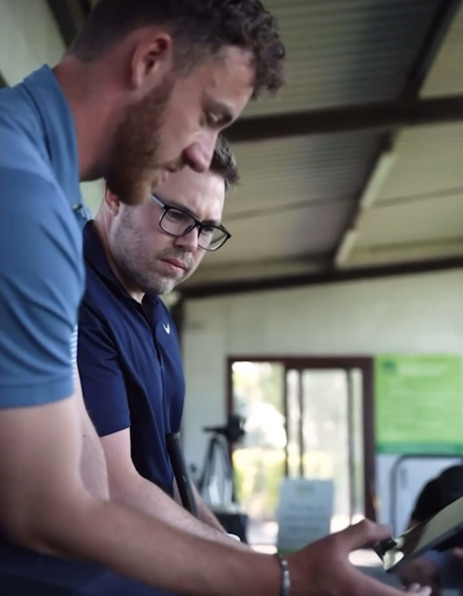
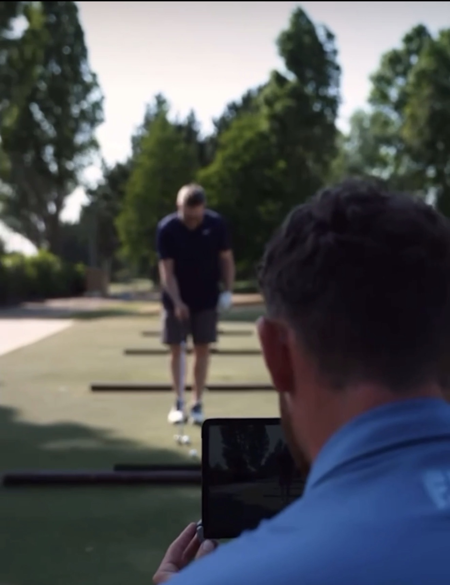

Unlock Your Potential with Expert Golf Coaching
Individualised coaching from a fully qualified PGA coach, backed by the latest swing analysis technology — based at Rustington Golf Centre.
Individualised coaching from a fully qualified PGA coach, backed by the latest swing analysis technology — based at Rustington Golf Centre.
Two ways to work with me, both built around individual progress.

The best way to improve your golf. Individualised coaching targeting your specific faults.
Learn more
A group setting promoting a more casual form of coaching with more emphasis on improving social bonds.
Learn moreFive tools I use to better my coaching.
A coaching platform so all communication, notes, videos and lesson feedback are in one place.
A motion sensor device that gives realistic and detailed putting data on your stroke.
3D wrist sensors that record exactly how your hands behave during the golf swing. Showing detail that is not visible to the naked eye for full swings, short game and putting.
The latest cutting edge 3D swing analysis software. Creating measurable goals for your swing to guarantee the correct areas are worked on.
A launch monitor that measures key impact variables including club face, club path and strike location. It simulates real world conditions, emulating the stresses of a golf course by setting distance and directional parameters to help transfer better technique out onto the course.



Setting myself apart, I begin our journey together with an assessment of your game. This allows me to establish where you’re currently at with your golf and explain what needs to change to get you to where you want to be. Click on the link to access my diary where you can book an assessment.
Book Here
Starting golf at 11, I immediately fell in love with all the game had to offer. During those younger years, I had so much fun learning the physical and mental skills required to perform. This passion combined with my natural inquisitive and altruistic nature, golf coaching lined up to be an ideal career path.
I completed the prestigious ‘Applied Golf Management Studies’ degree in 2012 and have been coaching ever since. I’m a fully qualified PGA Coach with 10 years of experience. I’ll never stop enjoying the learning process and helping people get better.
For the past 7 years, I’ve been at Rustington Golf Centre working under Steven Orr, the England boys’ coach. Golf coaching has developed since I received lessons as a boy, with the invention of new technology. I aim to utilise these to add to the experience of a golf lesson, as they can provide more accurate feedback than a human ever could.
Throughout my time coaching, I have had huge success with high handicap golfers and beginners.